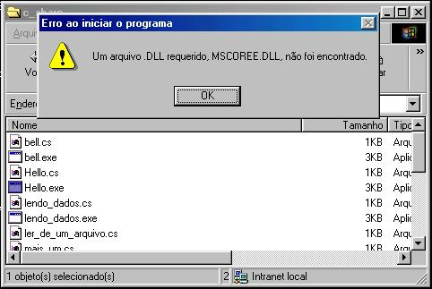

Universidade Federal do Rio Grande do Norte – UFRN
Departamento de Informática e Matemática Aplicada – DIMAp
Universidade Federal do Rio Grande do Norte – UFRN
Departamento de Informática e Matemática Aplicada – DIMAp
Plataforma .NET
e
Linguagem C#
Relatório
de DIM052
Prof.: Carlos Magno
Componentes:
Humberto Diógenes
Iúri Diniz
Ramon Enoc
Natal / RN
1a semana (19 a 23/05)
Estado do Projeto:
Fase inicial - Coleta de dados
Foram feitas pesquisas bibliográficas sobre C#, como resultado achamos vários sites e livros sobre o assunto:
Livro C#: Aplicações e Soluções
Ed. Érica, Renato Haddad.
http://www.editoraerica.com.br/buscafinal.asp?cod=7813&autor=Renato%20Haddad
Livro C#, Your Visual Blueprint for Building .NET Applications
Ed. maran Graphics, Eric Butow, Tommy Ryan.
Tutorial C#
http://www.softsteel.co.uk/tutorials/cSharp/
Site C# Station
Site MSDN Library
http://msdn.microsoft.com/library
Software Mono - Open source implementation of the .NET Development Framework.
Biblioteca GTK#
Artigo: Comparativo entre Java e C#
http://genamics.com/developer/csharp_comparative.htm
Artigo: Resumo da estrutura do .NET Framework:
http://www.gotmono.com/docs/architecture/architecture.html
2a semana (26 a 30/05)
Etapa do projeto:
Instalação dos programas (Compiladores, IDEs).
Nesta semana, nosso grupo se reuniu para acertarmos como iremos desenvolver nossas exemplos e documentação do projeto.
Nós utilizaremos como máquinas de trabalho, as máquinas do LCC do DIMAp, algumas rodando Linux e outras Windows 98.
Instalamos o .NET Framework 1.1 nas máquinas Windows 98, este software dá o suporte para execução dos programas .NET no Windows98.
Infelizmente não conseguimos instalar o .NET Framework SDK 1.1, pois o mesmo só roda em máquinas Windows 2000 ou superiores. Em virtude disto não usaremos o Windows98 para programar e compilar nosso código.
Instalamos então o Mono nas máquinas do LCC, para instalá-lo foi preciso compilar seu fonte, escrito em C++, e suas bibliotecas, escritas em C#.
Para
executar qualquer programa .NET no
Windows só é preciso executá-lo como
qualquer outro programa, mas antes deve-se ter o .NET Framework
instalado. Se por acaso tentarmos executar um programa .NET sem o
Framework instalado vê-se uma mensagem de erro. Para
executar o mesmo programa no Linux é
preciso chamar o mono, de um modo semelhante ao se executar um
programa escrito em
Java.
http://www.lcc.ufrn.br/~iuri/projeto/imagens/erro_windows.jpg

Para
se escrever o código nós adotamos o software Anjuta,
que torna muito mais rápido e a compilação e
execução de um programa em
C#. Há também o Visual Studio .NET, mas ele exige
máquinas Windows 2000 ou superiores e por não foi
instalado.
Fomos então testar os softwares, conseguimos compilar nosso primeiro Hello World e rodá-lo com sucesso no Windows 98 e no Linux, fotos das telas abaixo:
Linux:
http://www.lcc.ufrn.br/~iuri/projeto/imagens/hello_linux.jpg

Windows
98:
http://www.lcc.ufrn.br/~iuri/projeto/imagens/hello_windows.jpg

Código
fonte de
Hello.cs:
http://www.lcc.ufrn.br/~iuri/projeto/exemplos/Hello.cs
Hello.exe:
http://www.lcc.ufrn.br/~iuri/projeto/programas/Hello.exe
Relatório 3 (02 a 06/06)
Etapa:
Início do estudo sobre .NET
O termo .NET é confuso, pois é um projeto que envolve toda a Microsoft e abrange desde ferramentas de desenvolvimento a aplicações para o usuário final.
Plataforma de desenvolvimento .NET (Framework, biblioteca de classes, Visual Studio)
Web Services
Aplicações para servidor (Windows Server / IIS / Exchange / SQL Server)
Passport / Hailstorm – Sistema de identificação centralizado (já integrado ao Windows XP)
O .NET é a aposta da Microsoft numa plataforma de serviços distribuída, onde os sistemas são desenvolvidos para rodar na Internet, baseando-se em protocolos abertos como XML e SOAP.
Relatório 4 (09 a 13/06)
Etapa:
Estudos mais aprofundados sobre .NET
Comparação com Java Virtual Machine
Estudo do material fornecido pelo Prof. Carlos Magno, que esclareceu várias dúvidas sobre o funcionamento do .NET.
Pesquisa sobre as outras linguagens da Plataforma .NET da própria Microsoft – VB.NET, C++, JScript e J# – e projetos de terceiros (exportação de Python, PHP e Perl para .NET).
Comparação com Java Virtual Machine:
CLI e C# padronizados pela ECMA (link no final deste documento)
Possibilidade de uso de várias linguagens (não depende exclusivamente de uma linguagem, como Java)
Facilidade de reutilizar bibliotecas de uma linguagem em outra
Código sempre compilado
Promessa de mais rapidez (estruturas de dados mais simples no C#, possibilidade de desabilitar a Coleta de Lixo)
ADO.NET – Camada de abstração para banco de dados
ASP.NET – Serviços Web
Referência
Páginas consultadas durante o trabalho
Mono
(parte do Projeto Gnome,
Ximian):
http://www.go-mono.com
http://www.gotmono.com
DotGNU:
http://www.dotgnu.org
Portable.NET
(parte do projeto
DotGNU)
http://www.southern-storm.com.au/portable_net.html
.NET
Framework e .NET Framework
SDK:
http://msdn.microsoft.com
http://msdn.microsoft.com/library
http://tux.lcc.ufrn.br/~iuri/RPMS/c_sharp_win
ECMA
(Information and Communication Systems
Standards):
http://www.ecma-international.org
Especificação da linguagem C# (2a edição):
http://www.ecma-international.org/publications/standards/ecma-334.htm
Especificação da CLI (Common Language Infrastructure, 2a edição):
http://www.ecma-international.org/publications/standards/ecma-335.htm
Sites
sobre .NET:
http://www.gotdotnet.com/
http://www.codeproject.com/
IDE's:
Anjuta
DevStudio:
http://www.anjuta.org
SharpDevelop:
http://www.icsharpcode.net/opensource/sd/
{kind=link}
{kind=link}
{kind=link}